全局布局和比例不稳
主线 1模型能识别组件，但经常把左右结构生成成上下结构，主内容、侧栏、卡片和图片比例也不稳定。
- 表现
- 页面大结构错、组件尺寸错、间距错，Full Page 的 CLIP/SSIM 都容易被拉低。
- 方向
- 先显式抽取页面骨架、区域比例和组件层级，再约束代码生成。
先说明这个 benchmark 在测什么、输入输出是什么、官方链路如何评测，再把论文主图和主表放在同一页，最后对齐展示我们用 Qwen3.5 9B 跑出的结果。
Interaction2Code 关注的是从交互原型截图生成可交互网页，而不是只复刻静态页面。
从输入截图到最终分数，中间至少经过生成、渲染、触发、截图和指标计算五件事。
每个网页目录包含多张交互原型图和 action.json。配置里记录 src/dst、交互动作、tag type 和 visual type。
MLLM 接收 before/after 或 mark 图，生成完整 HTML/CSS/JS。Mark prompt 强制把触发元素标为 interact1。
官方代码用 Selenium/Firefox 打开 HTML，保存 0_source.png，再滚动到交互元素并点击，保存 1_x_y_click.png。
先用 CLIP 从点击截图中找最接近目标 after 图的一张；如果 evaluator 判断交互有效，再计算 Text、SSIM、Position 和 interaction 区域指标。
论文主表分为 Full Page 和 Interaction Part；README 显式展示的是 Interaction Part leaderboard。
| 指标 | 作用域 | 含义 | 需要注意 |
|---|---|---|---|
| CLIP | Full / Interaction | 整体视觉语义相似度 proxy。 | 对组件主题和视觉大意敏感，但不保证像素级布局一致。 |
| SSIM | Full / Interaction | 低层结构、边缘、布局相似度 proxy。 | 会被截图尺寸、滚动、字体、缩放影响，不是纯 layout。 |
| Text | Full / Interaction | OCR 后的文本相似度。 | 文字没抄准、OCR 失败、截图没截到区域都会拉低。 |
| Position | Interaction | 交互元素位置与红框标注位置的相似度。 | 官方代码使用点击图文件名里的元素坐标和 mark 图红框位置计算。 |
| IR | Interaction | Implement Rate，交互是否被 evaluator 判定为实现。 | 缺网页文件、无点击后截图、交互前后图相同等会导致 IR 失败或计 0。 |
这里嵌入的是论文 PDF 第 6 页 Table IV 的原始截图，包含 Full Page 和 Interaction Part 两组指标。下一节再把我们的 Qwen3.5-9B 结果接到同一列结构里。
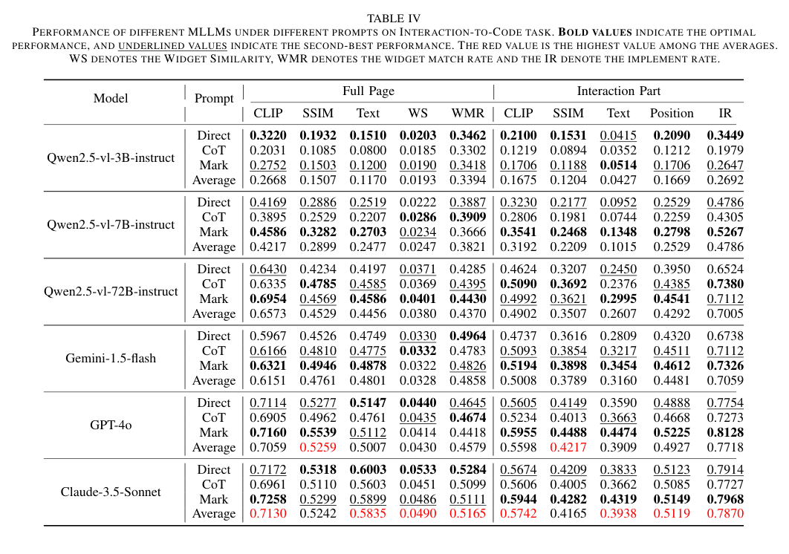
我们只跑了 Mark 提示词；这一行使用官方评测器的全量 375 惩罚均值，缺失、生成失败、评测器未产出分数都按 0 计入 375 分母。
| Model | Prompt | Full Page | Interaction Part | ||||||||
|---|---|---|---|---|---|---|---|---|---|---|---|
| CLIP | SSIM | Text | WS | WMR | CLIP | SSIM | Text | Position | IR | ||
| Qwen3.5-9B | Mark | 0.5269 | 0.4099 | 0.4538 | - | - | 0.4373 | 0.3069 | 0.2167 | 0.2958 | 0.5973 |
WS/WMR 本轮没有覆盖，保留论文主表列但置为 “-”。该行使用官方评测器的全量 375 惩罚均值：273/375 已评分，29 个未生成，73 个评测器未产出分数，224/375 完成实现。
这些不是单纯的 case 现象，而是可以组织成方法动机的失败类型。优先级越靠前，越适合作为论文主线；后面的点更适合作为补强模块或实验分析工具。
模型能识别组件，但经常把左右结构生成成上下结构，主内容、侧栏、卡片和图片比例也不稳定。
模型不一定理解 before 图到 after 图之间发生了什么，经常只复刻某一张静态图。
当前生成更像单轮写代码，写完后没有打开页面检查，也没有根据截图差异修正。
模型经常不是完全没写交互，而是事件绑定、状态类名、选择器和目标节点没有对上。
图片、图标、头像、商品图、logo 和 banner 经常被灰块、蓝块或空白占位替代。
很多页面结构大体正确，但一眼看起来不像，原因往往在文字系统。
弹窗、下拉菜单、tooltip、hover 卡片和侧边栏这些浮层组件经常位置或遮挡关系错误。
有些错误不是某个按钮错了，而是模型没看懂这个页面到底在完成什么业务动作。
部分任务不是审美失败，而是代码文件本身不完整或输出内容异常。
低分不一定全部来自模型能力，截图、裁剪和官方打分函数也会引入失败。
这里采用互斥路径：前置阶段失败后，不再把同一个任务继续塞进后续截图/指标问题里，避免把生成失败、触发器失败和评测失败混在一起。
没有最终 output/index.html，不能进入渲染和交互评测。
有 HTML 文件，但缺 </html> 或 </body>。
更像交互逻辑没做出来、状态没变，或交互类型不适合当前截图方式。
诊断截图有变化，但官方式截图缺图，或点击前后几乎没变化。
这不是“模型得分低”，而是官方打分函数没有返回分数。主要触发原因是交互前后差异区域为空，或裁剪出的交互区域为空；官方代码没有兜底处理，所以程序中断。全量惩罚口径下这些任务按 0 计入，分析失败原因时应单独看。
每类问题选一个代表任务，用目标图、模型渲染图和官方式截图对比说明。点击样本编号可打开对应 case.md。
分数表里的“官方评测器口径”指 Interaction2Code 官方打分函数产出的结果，会进入论文主表对齐；“我们诊断口径”指本报告额外做的渲染、触发和裁剪，只用于分析失败原因，不进入主表。
代表样本：110_2，点击数据库卡片后应进入数据库页面。
这类样本不要看渲染图，因为模型没有给出最终网页文件。更有价值的是看输出尾部：这里最终网页内容为空，推理尾部反复重复同一段判断，直到被长度限制截断。
最终网页内容：空文件
结束原因：长度限制
输出尾部片段：
- Wait, the blue rectangle is the "Authentication" card.
- Let's look at the "Postgres Database" card in S1. It has text "Every project is a full Postgres database...". Below that, there is a blue rectangle.
- No, the blue rectangle is the "Authentication" card.
- Let's look at the "Postgres Database" card in S1. It has text "Every project is a full Postgres database...". Below that, there is a blue rectangle.
- Wait, the blue rectangle is the "Authentication" card.
- Let's look at the "Postgres Database" card in S1. It has text "Every project is a full Postgres database...". Below that, there is a blue rectangle.
- No, the blue rectangle is the "Authentication" card.
- Let's look at the "Postgres Database" card in S1. It has text| 口径 | 状态 | 实现标记 | 全页 CLIP | 全页 SSIM | 全页文本 | 交互 CLIP | 交互 SSIM | 交互文本 | 位置 |
|---|---|---|---|---|---|---|---|---|---|
| 官方 | 未生成，按 0 计入 | - | 0.0000 | 0.0000 | 0.0000 | 0.0000 | 0.0000 | 0.0000 | 0.0000 |
| 诊断 | 无网页文件 | - | - | - | - | - | - | - | - |
代表样本：116_4，点击 Learn more 后应弹出仓库信息。
这一类有网页文件，但源码尾部不完整。页面可能还能被浏览器容错渲染出来，但交互代码和后续结构不可靠，低分不能只按视觉相似度解释。
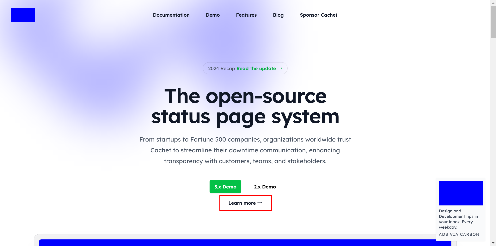
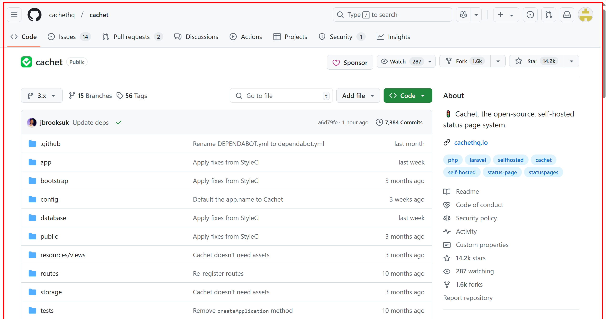
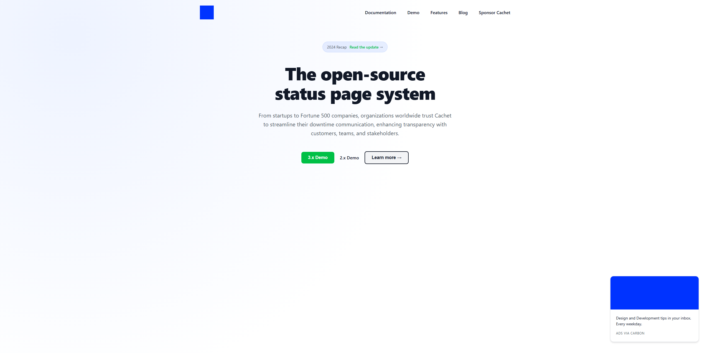
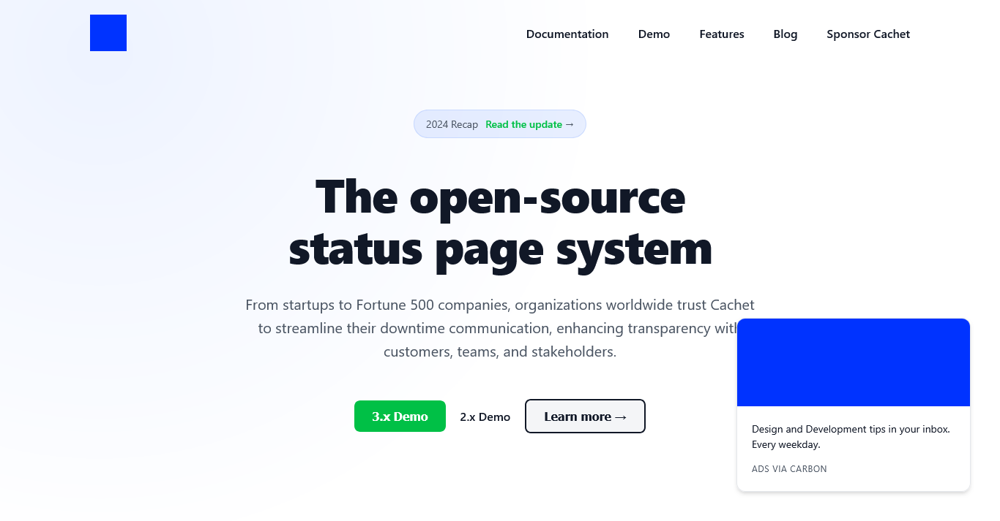
| 口径 | 状态 | 实现标记 | 全页 CLIP | 全页 SSIM | 全页文本 | 交互 CLIP | 交互 SSIM | 交互文本 | 位置 |
|---|---|---|---|---|---|---|---|---|---|
| 官方 | 已评分 | 否 | 0.6772 | 0.0000 | 0.0000 | 0.0000 | 0.0000 | 0.0000 | 0.0000 |
| 诊断 | 触发成功 | 是 | 0.6941 | 0.8186 | - | 0.7135 | 0.6715 | - | 0.9436 |
代表样本：100_1，页面能渲染，但源码层面有明显异常痕迹。
这类样本不能只看截图。即使页面有一定视觉结果，源码中仍可能出现重复片段、模板残留或助手内容泄露，说明生成过程缺少自检。
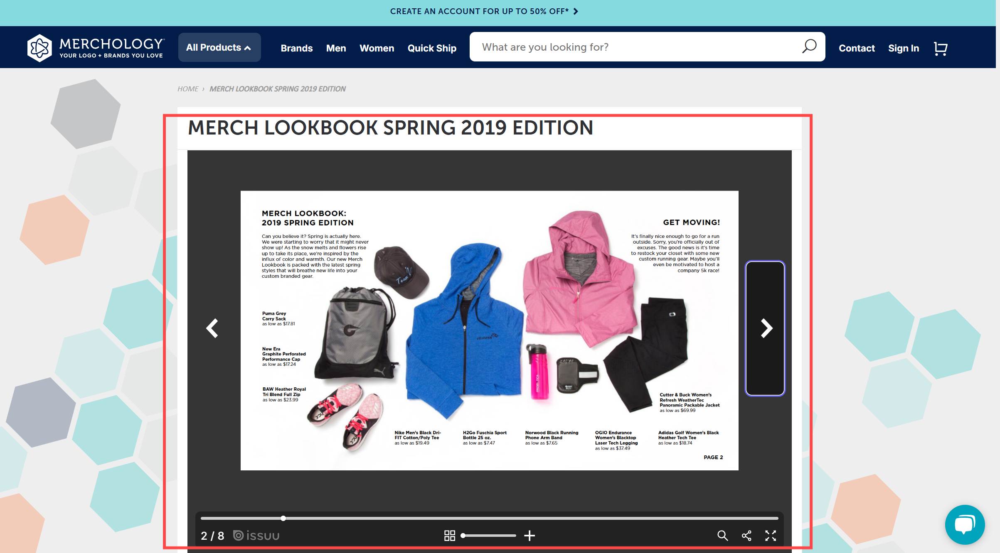
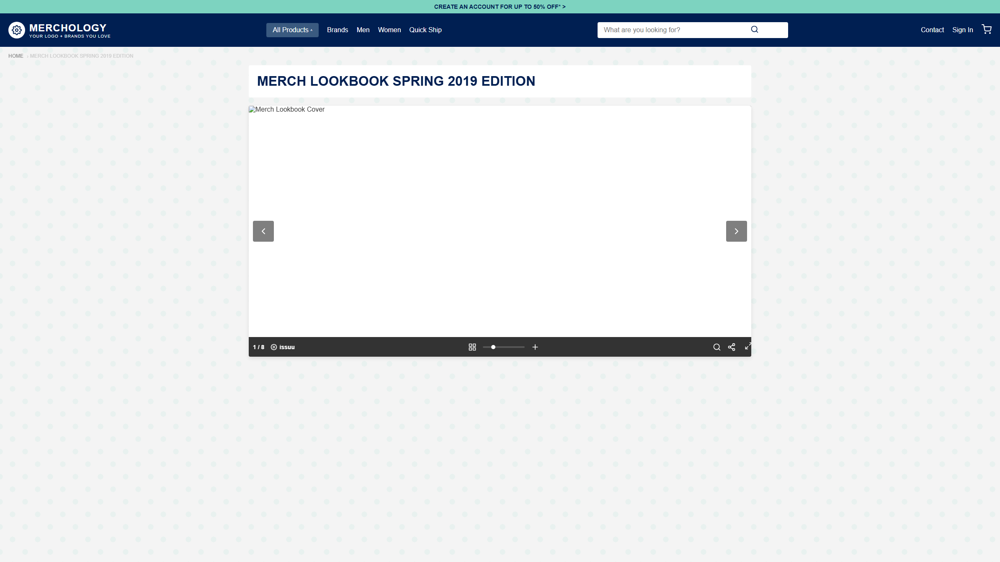
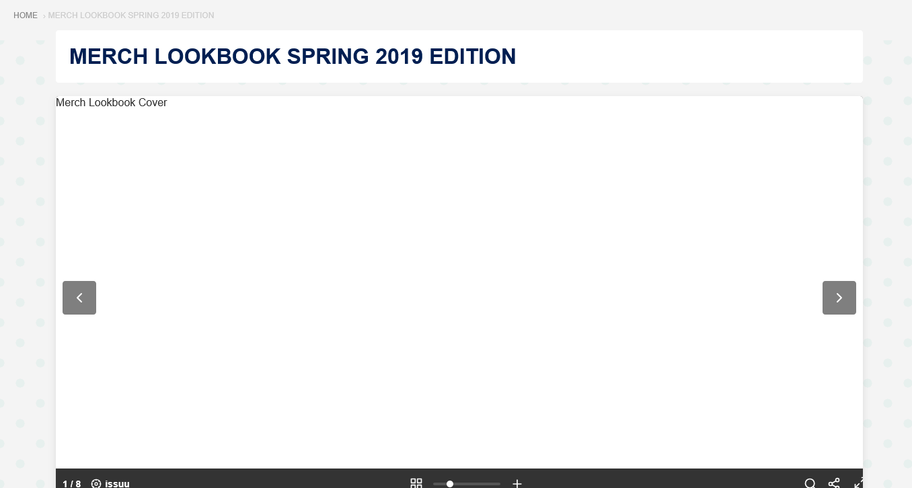
| 口径 | 状态 | 实现标记 | 全页 CLIP | 全页 SSIM | 全页文本 | 交互 CLIP | 交互 SSIM | 交互文本 | 位置 |
|---|---|---|---|---|---|---|---|---|---|
| 官方 | 已评分 | 是 | 0.6880 | 0.6840 | 0.0151 | 0.4993 | 0.4782 | 0.4444 | 0.5080 |
| 诊断 | 触发成功 | 是 | 0.5726 | 0.6578 | - | - | - | - | - |
代表样本：54_3，网页文件存在，但没有得到有效的第 1 个交互截图。
这类问题通常不是纯视觉问题，而是交互元素定位、元素标识或事件绑定没有对上。页面能打开，但评测链路找不到可用交互结果。
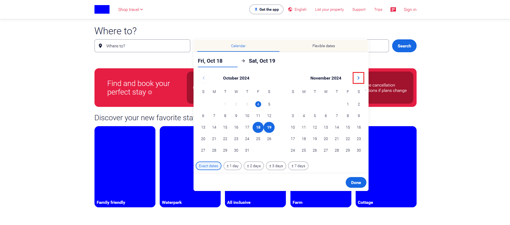
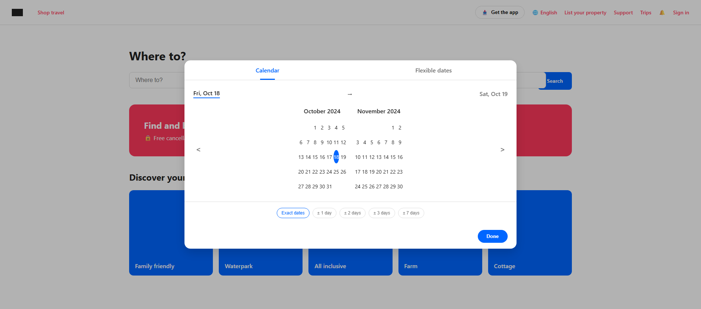

| 口径 | 状态 | 实现标记 | 全页 CLIP | 全页 SSIM | 全页文本 | 交互 CLIP | 交互 SSIM | 交互文本 | 位置 |
|---|---|---|---|---|---|---|---|---|---|
| 官方 | 已评分 | 否 | 0.0000 | 0.0000 | 0.0000 | 0.0000 | 0.0000 | 0.0000 | 0.0000 |
| 诊断 | 缺第 1 个交互图 | 否 | 0.8919 | 0.7518 | - | - | - | - | - |
代表样本：77_1，元素或动作在执行阶段出错。
这类样本说明模型可能生成了页面结构，但指定动作无法稳定执行。常见原因是目标元素不可见、被遮挡、交互类型不匹配或脚本绑定错误。
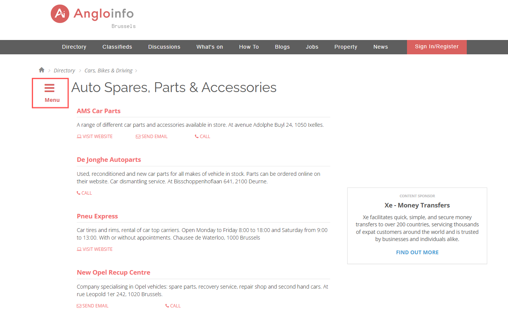
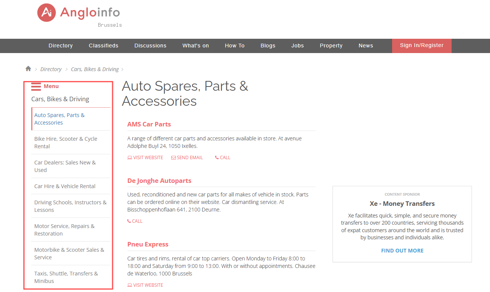
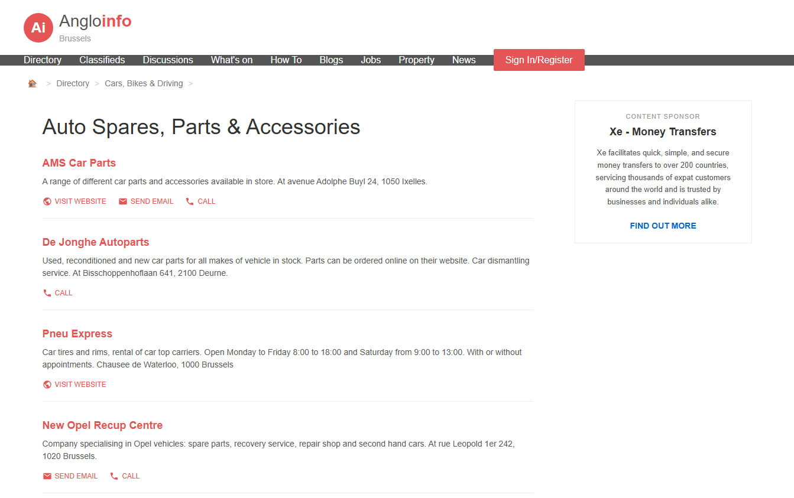

| 口径 | 状态 | 实现标记 | 全页 CLIP | 全页 SSIM | 全页文本 | 交互 CLIP | 交互 SSIM | 交互文本 | 位置 |
|---|---|---|---|---|---|---|---|---|---|
| 官方 | 已评分 | 否 | 0.0000 | 0.0000 | 0.0000 | 0.0000 | 0.0000 | 0.0000 | 0.0000 |
| 诊断 | 触发器执行报错 | 否 | 0.8150 | 0.6970 | - | - | - | - | - |
代表样本：58_2，评测动作执行完，但页面状态几乎不变。
这个样本主要是触发逻辑没写好：样式要求 .dropdown-menu.active 才显示菜单，但脚本把 active 加在父级 #interact1 上；收起逻辑又检查内联 display，实际从未把菜单设为显示。因此点击后没有打开目标下拉菜单。
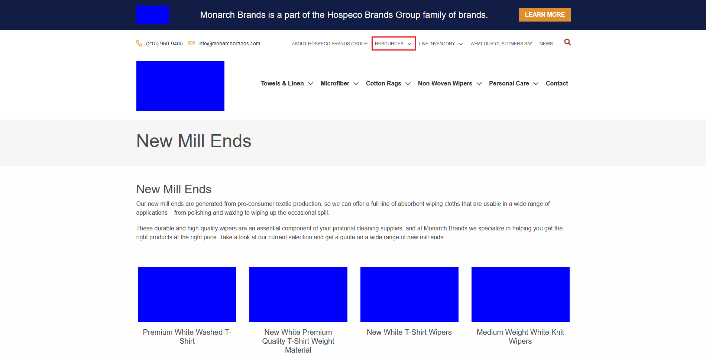
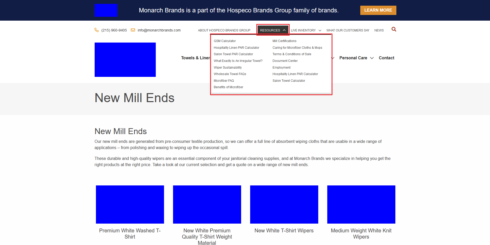
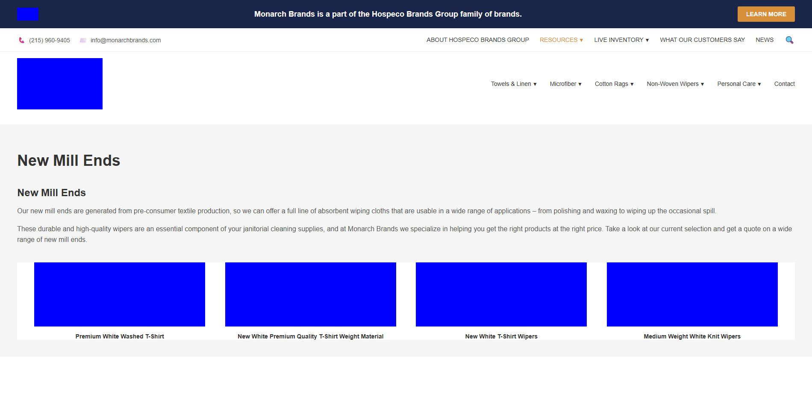
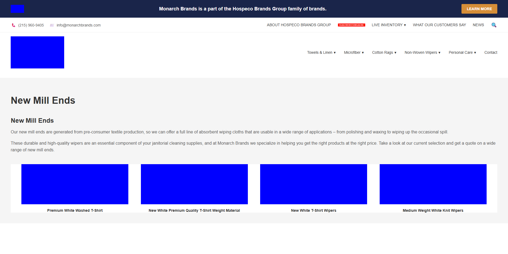
| 口径 | 状态 | 实现标记 | 全页 CLIP | 全页 SSIM | 全页文本 | 交互 CLIP | 交互 SSIM | 交互文本 | 位置 |
|---|---|---|---|---|---|---|---|---|---|
| 官方 | 已评分 | 是 | 0.6919 | 0.6934 | 0.6872 | 0.4656 | 0.3482 | 0.0000 | 0.1039 |
| 诊断 | 触发成功 | 是 | 0.6233 | 0.6534 | - | 0.5359 | 0.4108 | - | 0.5821 |
代表样本：119_7，诊断图能看到变化，但官方式截图不一定捕获到关键变化。
这类样本要优先区分“模型没做对”和“截图没截准”。如果诊断截图有变化，而官方式截图缺图、偏移或变化不明显，就不能直接把低分归因到模型能力。
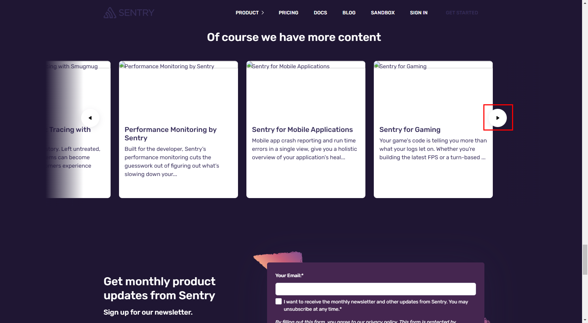
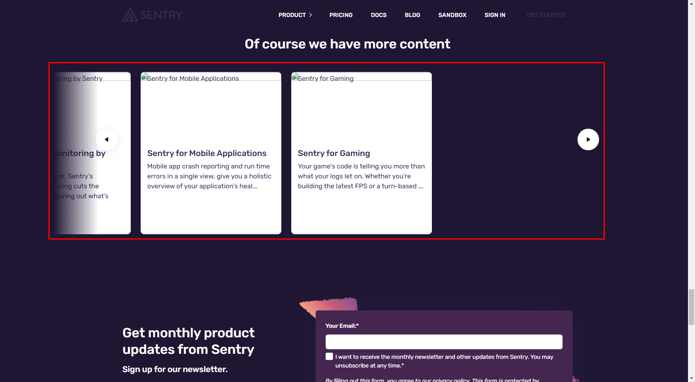
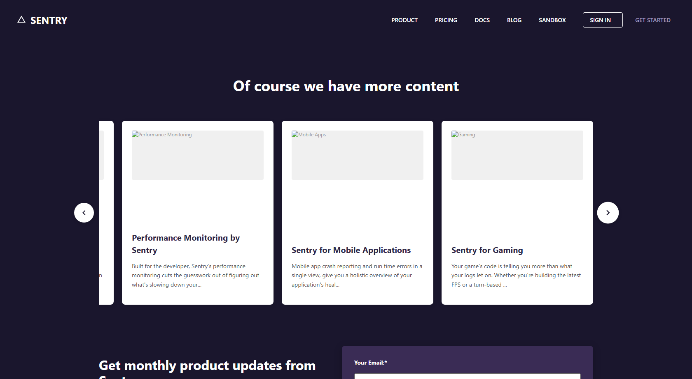
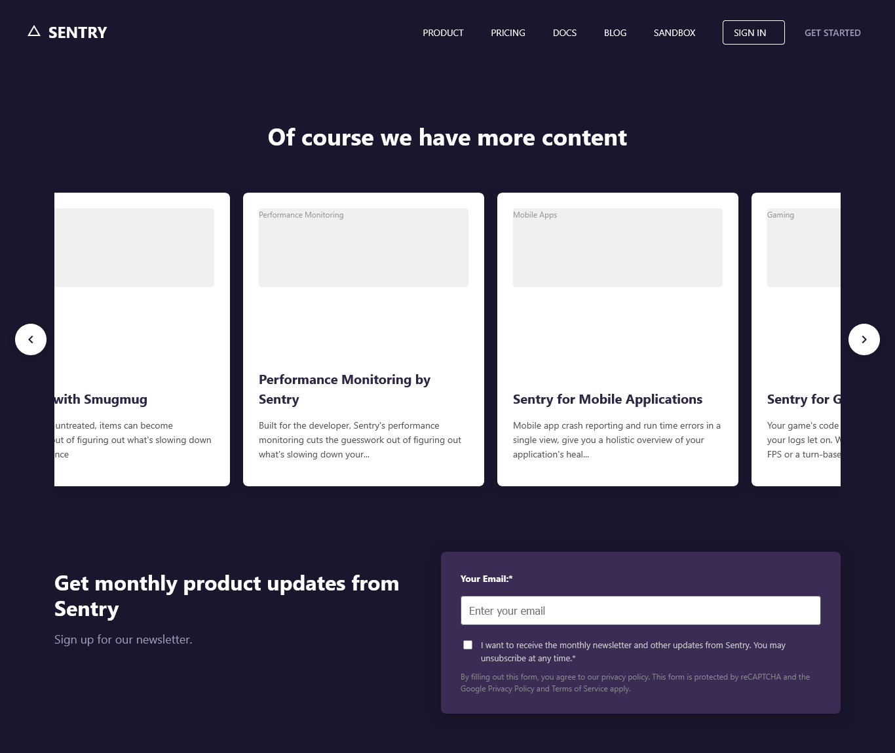
| 口径 | 状态 | 实现标记 | 全页 CLIP | 全页 SSIM | 全页文本 | 交互 CLIP | 交互 SSIM | 交互文本 | 位置 |
|---|---|---|---|---|---|---|---|---|---|
| 官方 | 已评分 | 是 | 0.8218 | 0.6300 | 0.6724 | 0.4744 | 0.4902 | 0.0000 | 0.5270 |
| 诊断 | 触发成功 | 是 | 0.8202 | 0.6219 | - | 0.6665 | 0.4779 | - | 0.8684 |
代表样本：104_4，官方式截图存在，但打分函数没有返回分数。
诊断图显示交互后页面有变化，但官方式触发前图是 1366×996，点击后图是 1366×1176，高度不一致。官方裁剪函数进入尺寸不一致分支后没有拿到差异行，缺少兜底处理后中断；全量惩罚口径下按 0 计入。
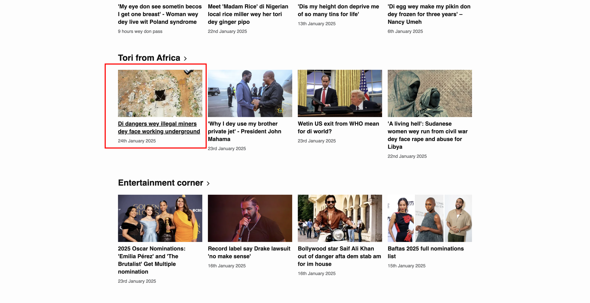
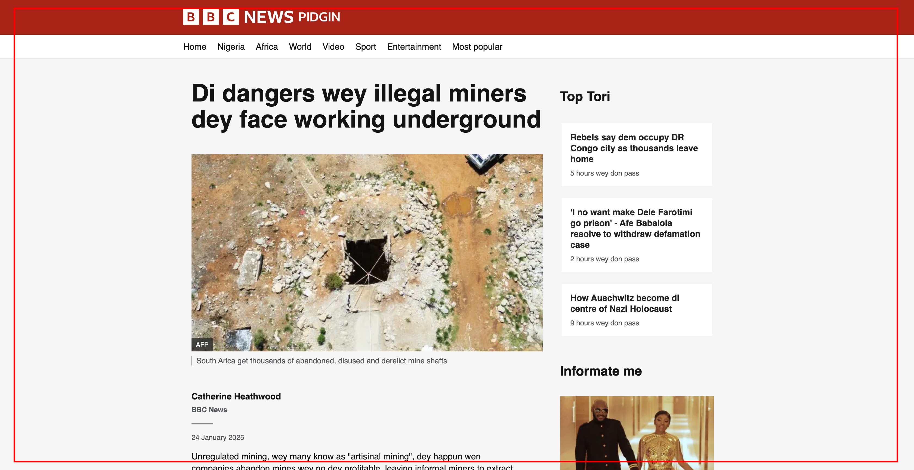
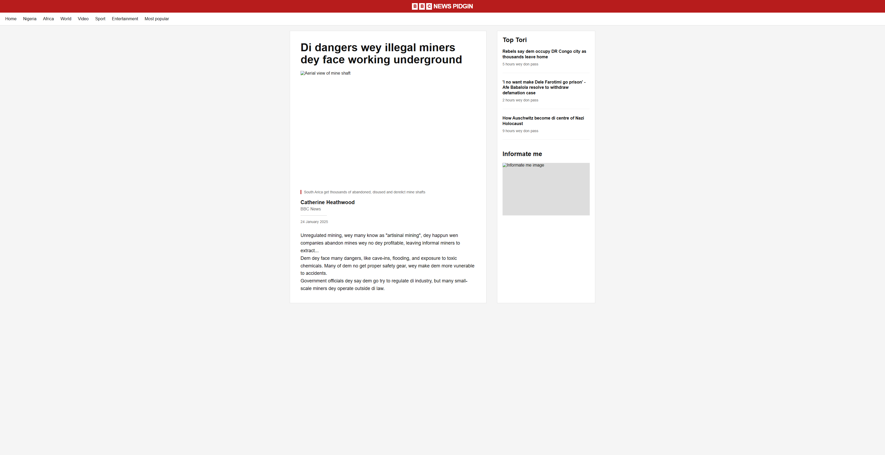
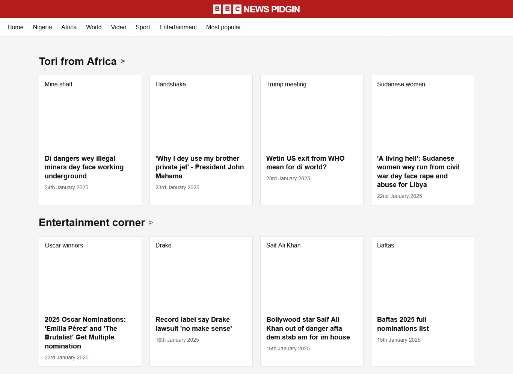
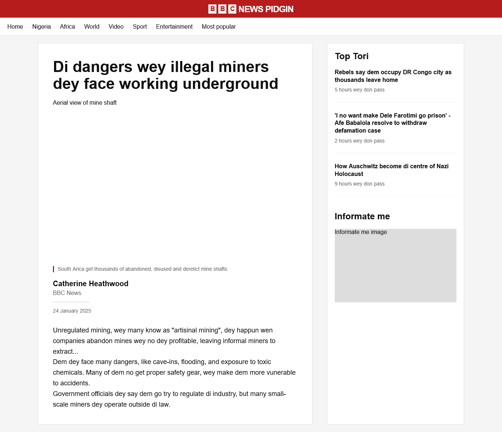
| 口径 | 状态 | 实现标记 | 全页 CLIP | 全页 SSIM | 全页文本 | 交互 CLIP | 交互 SSIM | 交互文本 | 位置 |
|---|---|---|---|---|---|---|---|---|---|
| 官方评测器口径 | 未产出分数，按 0 计入 | - | 0.0000 | 0.0000 | 0.0000 | 0.0000 | 0.0000 | 0.0000 | 0.0000 |
| 我们诊断口径 | 触发成功 | 是 | 0.5692 | 0.7671 | - | 0.6928 | 0.6808 | - | 0.8591 |
本报告由现有本地实验产物汇总而成；没有重新跑模型或评测器。路径相对本 HTML 所在目录。